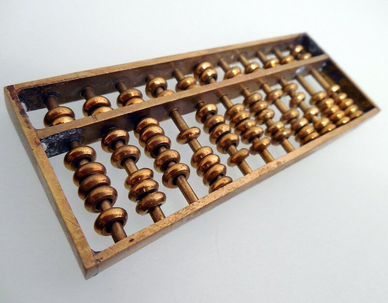
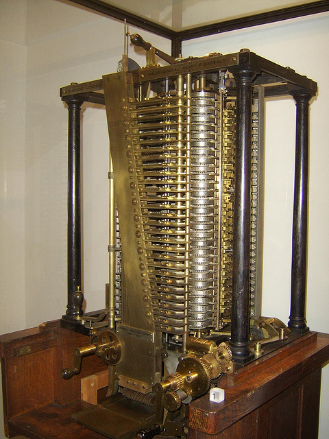
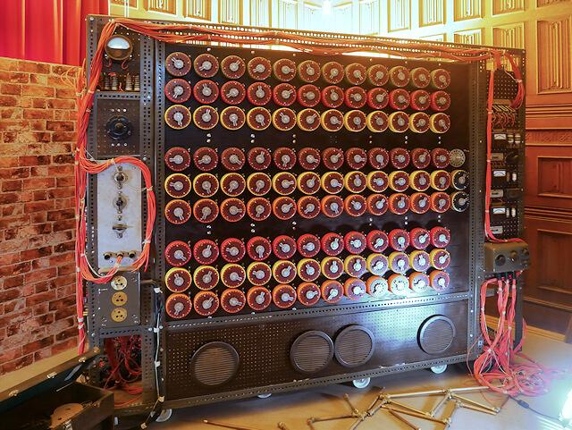
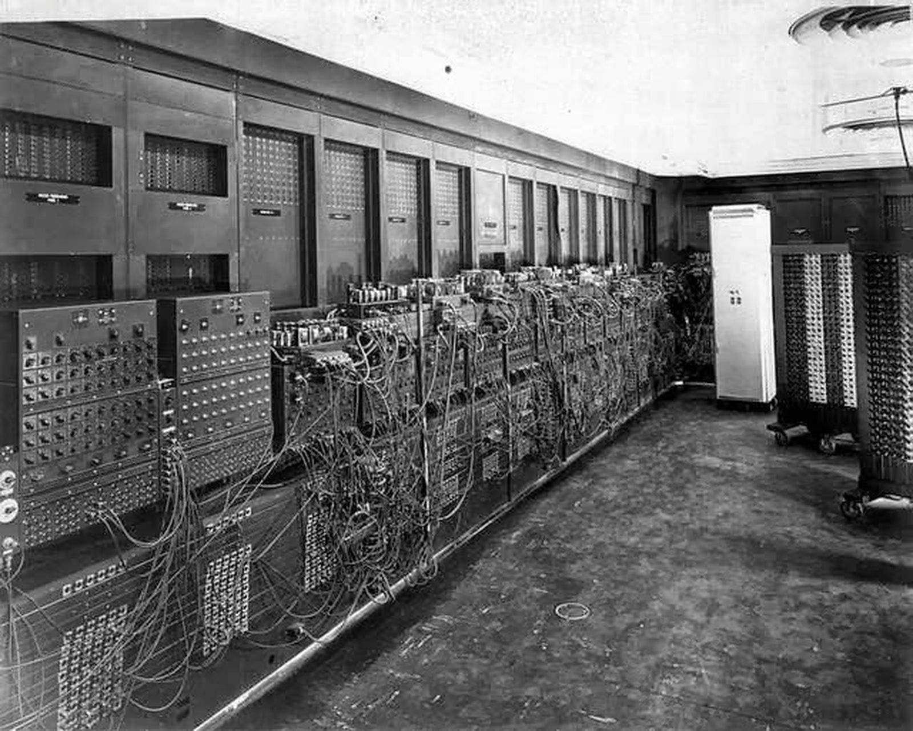
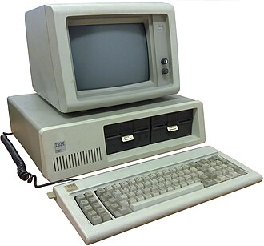

EL ABACO
El ábaco es uno de los instrumentos de cálculo más
antiguos conocidos. Permitía realizar operaciones
aritméticas mediante cuentas colocadas sobre varillas.

LA MAQUINA ANALITICA
En el siglo XIX, Charles Babbage diseñó
la Máquina Analítica, un proyecto de máquina
mecánica programable. Aunque no llegó a construirse
completamente en su época, su diseño incorporaba
ideas fundamentales de las computadoras modernas.

LA COMPUTACION TEORICA
En 1936, Alan Turing presentó el concepto
de la máquina de Turing, un modelo matemático
que ayudó a establecer las bases teóricas de
la computación.

LA ERA ELECTRONICA
Presentada públicamente en 1946, la ENIAC
fue una de las primeras computadoras
electrónicas digitales de propósito general.
Utilizaba miles de tubos de vacío y ocupaba
una enorme superficie.

UNA REVOLUCION TECNOLOGICA
Durante la década de 1950, los transistores
comenzaron a reemplazar a los tubos de vacío.
Permitieron fabricar computadoras más pequeñas,
eficientes y confiables.
LA INFORMATICA LLEGA A LOS HOGARES
Durante las décadas de 1970 y 1980 aparecieron
computadoras personales que hicieron que la
informática dejara de estar limitada principalmente
a grandes empresas, universidades y organismos
gubernamentales. IBM presentó su PC en 1981
